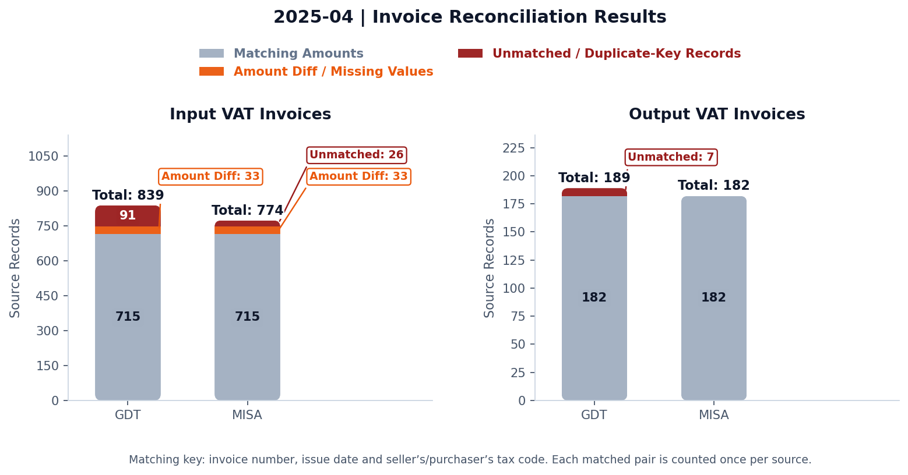

Business need
Check invoices collected from staff, then compare the printed invoices with accounting entries before preparing the VAT return.
My contribution
Automated GDT downloads with Python and Playwright, then built reconciliation charts and separate input/output Excel reports.
Practical value
Give the preparer a focused list of missing records and amount issues to investigate.
Two rounds of checking built on an assumed-complete invoice list
The group’s workload covered approximately 1,000 input invoices and 400 output invoices per month across two companies. The automation was applied to one company in the group. The accountant relied on MISA meInvoice’s advertised synchronisation with the GDT portal, assuming that its monthly input and output invoice lists were complete.
Based on that assumption, the accountant performed two rounds of checking:
- Check the collected e-invoices. Compare e-invoices submitted by staff in other departments with the invoices shown in meInvoice, then follow up documents that appeared to be missing.
- Check the printed invoices against accounting entries. Print the e-invoices collected in the first round and check for missing invoices and differences in invoice amounts, VAT and other information. Use the checked records to prepare the VAT return.
The gap I identified: Before building the automation, I manually checked the records and found that the meInvoice data did not always capture the invoices incurred for the month. Checking documents against that same incomplete list could leave invoices outside both rounds of review.
Two distinct data issues affected the reliability of the monthly review:
- Incomplete synchronisation. Invoices already available on the GDT portal may be absent from meInvoice when the connection or synchronisation process is interrupted.
- Timing differences in supplier reporting. Invoice data transmitted by suppliers after the initial review will not appear in an earlier download, even if synchronisation is working.
The first issue calls for checking and restoring synchronisation; the second calls for refreshing the data and reviewing subsequent additions. Both require reconciliation before the invoice population is treated as complete.
Data completeness: key considerations and implications
1. System connectivity. MISA’s guidance identifies loss of connectivity with the tax authority’s portal as a cause of interrupted invoice synchronisation. The preparer should confirm that synchronisation has completed and investigate differences between the portal records and the software extract. MISA technical guidance.
2. Timing of invoice-data transmission. The invoice date and the date on which data becomes available on the tax authority’s system may differ. Under the 2025 framework, specified suppliers could transmit data by the applicable VAT return filing deadline. Consequently, an extract obtained before that deadline might not include all subsequently reported invoices. The 20th of the following month relates to the monthly filing deadline; it is not a general invoice issuance or upload deadline. 2025 regulatory guidance; PwC Vietnam NewsBrief, April 2025.
Implications for the company. A completed synchronisation does not, on its own, demonstrate that the invoice population is complete. The preparer should reconcile the latest portal data, supplier invoices and accounting records, investigate exceptions and retain evidence of the review before finalising the VAT return.
Regulatory context. The Decree 70 discussion above concerns the framework effective from 1 June 2025. Decree 254/2026 and Circular 91/2026 replaced that framework from 1 July 2026; the rules applicable to the relevant reporting period should be considered. EY Vietnam Tax Alert, July 2026.
From manual investigation to automated reconciliation
I first investigated the gaps manually, then built the automated comparison to make that review repeatable.
I used Python and Playwright to automate downloading monthly input and output invoice lists from GDT. PowerShell can launch the Python automation.
I built Python reconciliation between GDT exports and MISA accounting/VAT schedules, comparing invoice number, issue date and the relevant tax code, then checking the net amount, VAT and invoice total.
The charts provide an overview of differences. Separate input and output Excel reports identify missing records and amount differences so the preparer can trace and investigate individual invoices.
With this workflow, the invoice-checking activity took 15–20 minutes instead of approximately two hours. Supporting-document completeness and tax treatment still require the preparer’s judgment.
Less manual checking, a focused review of differences
Before the workflow
Approximately two hours spent printing invoices and checking them against accounting entries.
With the reconciliation workflow
Actual time for the invoice-checking activity using the reconciliation workflow.
Time reduction
Reduced from approximately 120 minutes to 15–20 minutes for the invoice printing/checking activity.
Automated comparisons and two Excel exception reports reduced manual checking and gave the preparer specific differences to investigate. The time saving applies to invoice printing/checking, rather than total VAT return preparation.
Reconciliation results
These group-wide volumes are distinct from the single-company scope of this case study and its fictional demonstration data.
About the public example: The method is work-informed. Invoice details are fictional and calibrated to retained aggregate counts and reconciliation breakdowns; these are not independently generated aggregates or measured business outcomes.

Show Python code · Source and status chart
Uses the current public project module and packaged fictional inputs. This example displays the chart without overwriting the approved image. The plotting function below is copied directly from that module; its constants and helper functions remain in the project file.
from pathlib import Path
import json
import matplotlib.pyplot as plt
import vat_reconciliation as vr
# Run from a separate copy of the extracted public project.
root = Path.cwd()
month = '2025-04'
tax_code = json.loads((root / 'demo_config.json').read_text())['tax_code']
gdt, diagnostics = vr.load_gdt_folder(root, month, tax_code)
if not diagnostics.status.eq('loaded').all():
raise ValueError('All four GDT source files are required.')
misa = vr.read_misa(root / 'MISA_VAT_Return_Schedules.xlsx', month)
overview = vr.source_status_overview(gdt, misa)
figure = vr.plot_comparison(overview, month)
plt.show()View the complete source and dependencies on GitHub
Drawing the chart
def plot_comparison(overview, month, matching=False, palette="modern"):
"""Matplotlib source-level counts; review records are not labelled tax errors."""
import matplotlib.pyplot as plt
import numpy as np
from matplotlib.colors import to_rgb
columns = ['Matched Invoices', 'Amount Differences / Missing Values', 'Unmatched / Duplicate-Key Records'] if matching else list(STATUS_LABELS.values())
if palette not in STATUS_PALETTES:raise ValueError(f'Unknown invoice-status palette: {palette}')
colors = ['#237C73', '#D99332', '#527DA8'] if matching else [STATUS_PALETTES[palette][column] for column in columns]
opacity = .95 if palette == 'modern' else 1
if matching and palette == 'modern':
colors = ['#A0AEC0', '#EA580C', '#991B1B']
fig, axes = plt.subplots(1, 2, figsize=(11.5, 5.0), facecolor='#FFFFFF')
for axis, name in zip(axes, ['Input VAT Invoices', 'Output VAT Invoices']):
axis.set_facecolor('#FFFFFF')
data = overview.loc[overview['Invoice Type'].eq(name)].set_index('Source').reindex(['GDT', 'MISA'])
bottom = np.zeros(2)
maximum = max(float(data[columns].sum(axis=1).max()), 1)
small_segments = []
for column, color in zip(columns, colors):
values = data[column].to_numpy(dtype=float)
legend_label = 'Matching Amounts' if matching and column == 'Matched Invoices' else column
if matching and column == 'Amount Differences / Missing Values':legend_label='Amount Diff / Missing Values'
bars = axis.bar(['GDT', 'MISA'], values, bottom=bottom, label=legend_label, color=color, alpha=opacity, edgecolor='none', width=.55)
r, g, b = to_rgb(color)
lum = 0.2126*r + 0.7152*g + 0.0722*b
inner_text_c = '#0F172A' if lum > 0.65 else '#FFFFFF'
for x, (bar, value) in enumerate(zip(bars, values)):
if not value:continue
center = bar.get_y() + bar.get_height() / 2
if value < maximum * .04:
short = {'Amount Differences / Missing Values': 'Amount Diff', 'Unmatched / Duplicate-Key Records': 'Unmatched', 'Matched Invoices': 'Matched'}.get(column, column.replace(' Invoices', ''))
label_color = '#64748B' if column in ['Other', 'Matched Invoices'] or color in ['#CBD5E1', '#A0AEC0'] else ('#A05206' if color == '#D9822B' else color)
small_segments.append((x, center, f'{short}: {int(value)}', color, label_color))
else:
axis.text(x, center, str(int(value)), ha='center', va='center', fontsize=9.5,
color=inner_text_c, fontweight='bold',
bbox={'facecolor': color, 'alpha': 0.15, 'edgecolor': 'none', 'pad': 2, 'boxstyle': 'round,pad=0.25'})
bottom += values
for x, total in enumerate(bottom):
axis.text(x, total + max(bottom.max() * .028, .4), f'Total: {int(total)}', ha='center', fontsize=10, fontweight='bold', color='#0F172A',zorder=6,bbox={'facecolor':'white','edgecolor':'none','pad':.8})
slots = {0: 0, 1: 0}
for x, center, label, color, label_color in small_segments:
level = slots[x];slots[x] += 1
callout_x = 0.28 if x == 0 else 1.52
axis.annotate(label, xy=(x + .26, center), xytext=(callout_x, maximum * (1.13 + .11 * level)),
ha='left', fontsize=8.5, color=label_color, fontweight='bold',
zorder=4,arrowprops={'arrowstyle': '-', 'color': color, 'linewidth': 1.1, 'relpos': (0, 0),'shrinkA':3,'shrinkB':2},
bbox={'facecolor': '#FFFFFF', 'edgecolor': color, 'pad': 2.2, 'boxstyle': 'round,pad=0.25', 'linewidth': 1.0})
if small_segments:
axis.set_xlim(-.5, 2.55)
headroom = max(1.22, 1.25 + .11 * (max(slots.values()) - 1)) if small_segments else 1.22
axis.set_ylim(0, max(maximum * headroom, 1))
axis.set_title(name, fontsize=12, fontweight='bold', color='#0F172A', pad=12)
axis.set_ylabel('Source Records', fontsize=10, color='#475569')
axis.spines[['top', 'right']].set_visible(False)
axis.spines[['left', 'bottom']].set_color('#CBD5E1')
axis.tick_params(colors='#475569', labelsize=9.5)
axis.yaxis.set_major_locator(plt.MaxNLocator(integer=True))
handles, labels = axes[0].get_legend_handles_labels()
legend = fig.legend(handles, labels, loc='upper center', bbox_to_anchor=(.5, .93), ncol=2 if matching else 3, frameon=False, fontsize=9.5)
for label, color in zip(legend.get_texts(), colors):
legend_color = '#64748B' if color.upper() in ['#CBD5E1', '#EBEBD3', '#A0AEC0'] else ('#A05206' if color == '#D9822B' else color)
label.set_color(legend_color)
label.set_fontweight('bold')
title_text = f'{month} | ' + ('Invoice Reconciliation Results' if matching else 'Invoice Records by Source and Status')
fig.suptitle(title_text, fontsize=13.5, fontweight='bold', color='#0F172A', y=.99)
fig.text(.5, .015, 'Matching key: invoice number, issue date and seller’s/purchaser’s tax code. Each matched pair is counted once per source.' if matching else 'Status counts include related original invoices; customs declarations remain separately identified.', ha='center', fontsize=8.5, color='#475569')
fig.subplots_adjust(top=.72, bottom=.15, wspace=.28)
# Round the outer stack, keeping internal status boundaries flat. The radius
# is 10% of bar width; convert the vertical radius to preserve circular corners.
from matplotlib.path import Path as PlotPath
fig.canvas.draw()
for axis in axes:
for x in (0, 1):
segments = [bar for bar in axis.patches
if abs(bar.get_x() + bar.get_width() / 2 - x) < 1e-8]
if not segments: continue
total = max(bar.get_y() + bar.get_height() for bar in segments)
if total <= 0: continue
width = segments[0].get_width()
left, right = x - width / 2, x + width / 2
x_pixels = axis.bbox.width / (axis.get_xlim()[1] - axis.get_xlim()[0])
y_pixels = axis.bbox.height / (axis.get_ylim()[1] - axis.get_ylim()[0])
radius_x = min(width * .10, total * y_pixels / (2 * x_pixels))
radius_y = radius_x * x_pixels / y_pixels
vertices = [(left+radius_x,0),(right-radius_x,0),
(right,0),(right,radius_y),(right,total-radius_y),
(right,total),(right-radius_x,total),(left+radius_x,total),
(left,total),(left,total-radius_y),(left,radius_y),
(left,0),(left+radius_x,0),(left+radius_x,0)]
codes = [PlotPath.MOVETO,PlotPath.LINETO,
PlotPath.CURVE3,PlotPath.CURVE3,PlotPath.LINETO,
PlotPath.CURVE3,PlotPath.CURVE3,PlotPath.LINETO,
PlotPath.CURVE3,PlotPath.CURVE3,PlotPath.LINETO,
PlotPath.CURVE3,PlotPath.CURVE3,PlotPath.CLOSEPOLY]
outline = PlotPath(vertices, codes)
for bar in segments: bar.set_clip_path(outline, axis.transData)
return fig
Show Python code · Reconciliation chart
Uses the current public project module and packaged fictional inputs. This example displays the chart without overwriting the approved image. The plotting function below is copied directly from that module; its constants and helper functions remain in the project file.
from pathlib import Path
import json
import matplotlib.pyplot as plt
import vat_reconciliation as vr
# Run from a separate copy of the extracted public project.
root = Path.cwd()
month = '2025-04'
tax_code = json.loads((root / 'demo_config.json').read_text())['tax_code']
gdt, diagnostics = vr.load_gdt_folder(root, month, tax_code)
if not diagnostics.status.eq('loaded').all():
raise ValueError('All four GDT source files are required.')
misa = vr.read_misa(root / 'MISA_VAT_Return_Schedules.xlsx', month)
results = {direction: vr.reconcile(gdt, misa, month, direction)
for direction in ('purchases', 'sales')}
overview = vr.matching_overview(results, gdt, misa)
figure = vr.plot_comparison(overview, month, matching=True)
plt.show()View the complete source and dependencies on GitHub
Drawing the chart
def plot_comparison(overview, month, matching=False, palette="modern"):
"""Matplotlib source-level counts; review records are not labelled tax errors."""
import matplotlib.pyplot as plt
import numpy as np
from matplotlib.colors import to_rgb
columns = ['Matched Invoices', 'Amount Differences / Missing Values', 'Unmatched / Duplicate-Key Records'] if matching else list(STATUS_LABELS.values())
if palette not in STATUS_PALETTES:raise ValueError(f'Unknown invoice-status palette: {palette}')
colors = ['#237C73', '#D99332', '#527DA8'] if matching else [STATUS_PALETTES[palette][column] for column in columns]
opacity = .95 if palette == 'modern' else 1
if matching and palette == 'modern':
colors = ['#A0AEC0', '#EA580C', '#991B1B']
fig, axes = plt.subplots(1, 2, figsize=(11.5, 5.0), facecolor='#FFFFFF')
for axis, name in zip(axes, ['Input VAT Invoices', 'Output VAT Invoices']):
axis.set_facecolor('#FFFFFF')
data = overview.loc[overview['Invoice Type'].eq(name)].set_index('Source').reindex(['GDT', 'MISA'])
bottom = np.zeros(2)
maximum = max(float(data[columns].sum(axis=1).max()), 1)
small_segments = []
for column, color in zip(columns, colors):
values = data[column].to_numpy(dtype=float)
legend_label = 'Matching Amounts' if matching and column == 'Matched Invoices' else column
if matching and column == 'Amount Differences / Missing Values':legend_label='Amount Diff / Missing Values'
bars = axis.bar(['GDT', 'MISA'], values, bottom=bottom, label=legend_label, color=color, alpha=opacity, edgecolor='none', width=.55)
r, g, b = to_rgb(color)
lum = 0.2126*r + 0.7152*g + 0.0722*b
inner_text_c = '#0F172A' if lum > 0.65 else '#FFFFFF'
for x, (bar, value) in enumerate(zip(bars, values)):
if not value:continue
center = bar.get_y() + bar.get_height() / 2
if value < maximum * .04:
short = {'Amount Differences / Missing Values': 'Amount Diff', 'Unmatched / Duplicate-Key Records': 'Unmatched', 'Matched Invoices': 'Matched'}.get(column, column.replace(' Invoices', ''))
label_color = '#64748B' if column in ['Other', 'Matched Invoices'] or color in ['#CBD5E1', '#A0AEC0'] else ('#A05206' if color == '#D9822B' else color)
small_segments.append((x, center, f'{short}: {int(value)}', color, label_color))
else:
axis.text(x, center, str(int(value)), ha='center', va='center', fontsize=9.5,
color=inner_text_c, fontweight='bold',
bbox={'facecolor': color, 'alpha': 0.15, 'edgecolor': 'none', 'pad': 2, 'boxstyle': 'round,pad=0.25'})
bottom += values
for x, total in enumerate(bottom):
axis.text(x, total + max(bottom.max() * .028, .4), f'Total: {int(total)}', ha='center', fontsize=10, fontweight='bold', color='#0F172A',zorder=6,bbox={'facecolor':'white','edgecolor':'none','pad':.8})
slots = {0: 0, 1: 0}
for x, center, label, color, label_color in small_segments:
level = slots[x];slots[x] += 1
callout_x = 0.28 if x == 0 else 1.52
axis.annotate(label, xy=(x + .26, center), xytext=(callout_x, maximum * (1.13 + .11 * level)),
ha='left', fontsize=8.5, color=label_color, fontweight='bold',
zorder=4,arrowprops={'arrowstyle': '-', 'color': color, 'linewidth': 1.1, 'relpos': (0, 0),'shrinkA':3,'shrinkB':2},
bbox={'facecolor': '#FFFFFF', 'edgecolor': color, 'pad': 2.2, 'boxstyle': 'round,pad=0.25', 'linewidth': 1.0})
if small_segments:
axis.set_xlim(-.5, 2.55)
headroom = max(1.22, 1.25 + .11 * (max(slots.values()) - 1)) if small_segments else 1.22
axis.set_ylim(0, max(maximum * headroom, 1))
axis.set_title(name, fontsize=12, fontweight='bold', color='#0F172A', pad=12)
axis.set_ylabel('Source Records', fontsize=10, color='#475569')
axis.spines[['top', 'right']].set_visible(False)
axis.spines[['left', 'bottom']].set_color('#CBD5E1')
axis.tick_params(colors='#475569', labelsize=9.5)
axis.yaxis.set_major_locator(plt.MaxNLocator(integer=True))
handles, labels = axes[0].get_legend_handles_labels()
legend = fig.legend(handles, labels, loc='upper center', bbox_to_anchor=(.5, .93), ncol=2 if matching else 3, frameon=False, fontsize=9.5)
for label, color in zip(legend.get_texts(), colors):
legend_color = '#64748B' if color.upper() in ['#CBD5E1', '#EBEBD3', '#A0AEC0'] else ('#A05206' if color == '#D9822B' else color)
label.set_color(legend_color)
label.set_fontweight('bold')
title_text = f'{month} | ' + ('Invoice Reconciliation Results' if matching else 'Invoice Records by Source and Status')
fig.suptitle(title_text, fontsize=13.5, fontweight='bold', color='#0F172A', y=.99)
fig.text(.5, .015, 'Matching key: invoice number, issue date and seller’s/purchaser’s tax code. Each matched pair is counted once per source.' if matching else 'Status counts include related original invoices; customs declarations remain separately identified.', ha='center', fontsize=8.5, color='#475569')
fig.subplots_adjust(top=.72, bottom=.15, wspace=.28)
# Round the outer stack, keeping internal status boundaries flat. The radius
# is 10% of bar width; convert the vertical radius to preserve circular corners.
from matplotlib.path import Path as PlotPath
fig.canvas.draw()
for axis in axes:
for x in (0, 1):
segments = [bar for bar in axis.patches
if abs(bar.get_x() + bar.get_width() / 2 - x) < 1e-8]
if not segments: continue
total = max(bar.get_y() + bar.get_height() for bar in segments)
if total <= 0: continue
width = segments[0].get_width()
left, right = x - width / 2, x + width / 2
x_pixels = axis.bbox.width / (axis.get_xlim()[1] - axis.get_xlim()[0])
y_pixels = axis.bbox.height / (axis.get_ylim()[1] - axis.get_ylim()[0])
radius_x = min(width * .10, total * y_pixels / (2 * x_pixels))
radius_y = radius_x * x_pixels / y_pixels
vertices = [(left+radius_x,0),(right-radius_x,0),
(right,0),(right,radius_y),(right,total-radius_y),
(right,total),(right-radius_x,total),(left+radius_x,total),
(left,total),(left,total-radius_y),(left,radius_y),
(left,0),(left+radius_x,0),(left+radius_x,0)]
codes = [PlotPath.MOVETO,PlotPath.LINETO,
PlotPath.CURVE3,PlotPath.CURVE3,PlotPath.LINETO,
PlotPath.CURVE3,PlotPath.CURVE3,PlotPath.LINETO,
PlotPath.CURVE3,PlotPath.CURVE3,PlotPath.LINETO,
PlotPath.CURVE3,PlotPath.CURVE3,PlotPath.CLOSEPOLY]
outline = PlotPath(vertices, codes)
for bar in segments: bar.set_clip_path(outline, axis.transData)
return figSelect a chart to view it at full size. Use the downward-arrow “Show Python code” control directly beneath each chart to expand its code.
| Direction / source | Records | Matching amounts | For review | Source only |
|---|---|---|---|---|
| Input / GDT | 839 | 715 | 33 | 91 |
| Input / MISA | 774 | 715 | 33 | 26 |
| Output / GDT | 189 | 182 | 0 | 7 |
| Output / MISA | 182 | 182 | 0 | 0 |
The 33 input reviews have missing GDT net amounts. The 26 MISA-only records include 20 fictional customs declarations and six prior-period invoices. Automated tests separately cover amount differences and duplicate keys.
Downloads and scope
Two reports for the preparer
Input VAT report: purchases matched using the seller’s tax code. Output VAT report: sales matched using the purchaser’s tax code. Both also use invoice number and issue date.
- Matching Reconciliations: matched records and agreeing amounts, with source references.
- Mismatch Reconciliations: paired GDT/MISA records in review blocks, showing missing amounts and net/VAT/total differences.
- Invoices Only From GDT: records without a corresponding MISA match, for follow-up.
- Invoices Only From MISA: records outside the matched set, including customs or prior-period items requiring explanation.
One demo period: April 2025. The former 2026-08 files were duplicate filename aliases, not a second dataset, and have been removed from the current repository. Six earlier-issued invoices are intentional timing-review items within the April MISA schedule.
Start with the input or output report to see the review lists. The full project ZIP includes the notebook, source workbooks, Python code and tests.
The project includes four fictional GDT-style workbooks and one fictional MISA-style workbook with purchase and sales schedules. A deterministic fixture specification and generator are included. Invoice-level names, identifiers, dates and amounts are fictional. Source volumes and reconciliation breakdowns retain the earlier aggregate presentation. No original invoice lookup links, client rows or credentials are included. Separate GDT download code is supplied for authorised use.
Review classifications document project rules. They do not independently establish document type or eligibility for an input VAT credit. Demonstration results are not presented as measured client savings.
How the matching works
1. Preserve the source
Read invoice numbers and tax codes as text. Keep the original values and source row references.
2. Match invoice details
Use invoice number, issue date and the seller’s tax code for inputs, or purchaser’s tax code for outputs. Check duplicate keys before joining.
3. Explain differences
Compare all three amounts and retain blank net amounts as missing. Present each GDT review record above its MISA counterpart.
Inspect a matching-key function
def comparison_identifier(value):
value = str(value)
return (value.lstrip("0") or "0") if value.isdigit() else value
# Normalised keys are separate from the original invoice fields.
data["key_invoice_number"] = data.invoice_number.map(comparison_identifier)Explore the step-by-step notebook
Explore the analysis
Follow the working notebook’s steps below: load the sources, inspect invoice statuses and special cases, reconcile input and output records, draw the charts and export two Excel reports. Private configuration and records are replaced with the approved April 2025 example.